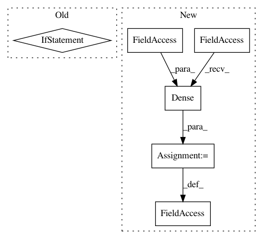

751eaead545d45bcc47bff7d82656b08c474b434,privacy/bolton/model.py,Bolton,compile,#Bolton#Any#Any#Any#Any#Any#Any#Any#Any#,104
Before Change
See super class. Default optimizer used in Bolton method is SGD.
if not isinstance(loss, StrongConvexLoss):
raise ValueError("Loss must be subclassed from StrongConvexLoss")
self.output_layer.kernel_regularizer.l2 = loss.reg_lambda()
if not isinstance(optimizer, Private):
optimizer = optimizers.get(optimizer)
if isinstance(self.optimizer, trackable.Trackable):
After Change
if not self._layers_instantiated: // compile may be called multiple times
kernel_intiializer = kwargs.get("kernel_initializer",
tf.initializers.GlorotUniform)
self.output_layer = tf.keras.layers.Dense(
self.n_classes,
kernel_regularizer=loss.kernel_regularizer(),
kernel_initializer=kernel_intiializer(),
)
self._layers_instantiated = True
self.output_layer.kernel_regularizer.l2 = loss.reg_lambda
if not isinstance(optimizer, Private):
optimizer = optimizers.get(optimizer)
In pattern: SUPERPATTERN
Frequency: 3
Non-data size: 6
Instances
Project Name: tensorflow/privacy
Commit Name: 751eaead545d45bcc47bff7d82656b08c474b434
Time: 2019-06-10
Author: choquette.christopher@gmail.com
File Name: privacy/bolton/model.py
Class Name: Bolton
Method Name: compile
Project Name: tensorflow/models
Commit Name: d305396de02f488470eabc58c360824dafbadd55
Time: 2020-05-20
Author: gardener@tensorflow.org
File Name: official/vision/detection/modeling/architecture/heads.py
Class Name: ShapemaskCoarsemaskHead
Method Name: __init__
Project Name: uber/ludwig
Commit Name: e9aea97df1dc7878827ac193ba75cbea0b3ee351
Time: 2020-05-05
Author: jimthompson5802@gmail.com
File Name: ludwig/models/modules/sequence_decoders.py
Class Name: SequenceGeneratorDecoder
Method Name: __init__